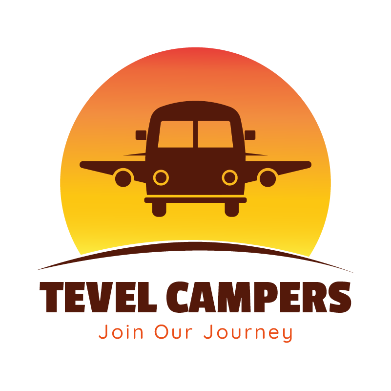
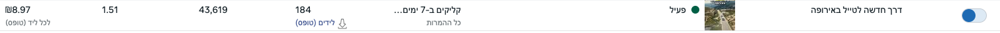
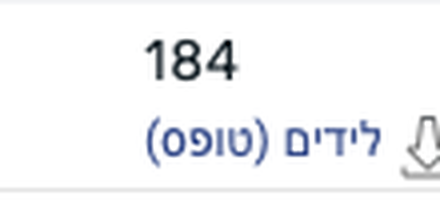
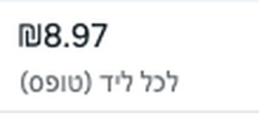

“A new way to travel Europe”
Tevel Campers is an Israeli travel brand selling camper-rental packages for Europe: the camper plus the flights, in one booking.


184 · Leads (forms)
₪8.97 · Cost per leadBefore
Nearly all of Tevel's leads came from influencer videos. They had worked, but by the time I came in they were fatiguing and cost per lead had climbed to around ₪20 (approx. $5.50). The open question: could brand-owned creative bring qualified leads at all, or was the brand dependent on creators?
The insight
“You've thought about a trip to Europe. You just haven't thought about a camper.”
Where it came from
I interviewed the founder. He talks to customers every day, and he kept describing the same person: a family with kids who had always done Europe as hotel, city and attractions, and had just booked a camper for the first time. So the audience wasn't “people who want a camper”. It was people already planning Europe who didn't know the camper option existed.
What's behind the creative
This creative speaks to a cold audience that has never met Tevel Campers. The hook is the heart of it: “There's another way to travel Europe.” It breaks the default picture of a European holiday (hotel, city walk, attractions) and opens a new one. The viewer is already in-market for Europe and unaware of the category, so the ad sells the option, not the camper.
A big filtering caption, “Camper trips in Europe”, runs across the whole video, and Tevel's actual destinations stay on screen throughout. Anyone looking for something else scrolls on. That is what kept the leads clean. The body expands the experience and the package details, and lands the differentiation from competitors.
The visuals follow the words and give the feeling of the experience: waking up, driving, cooking, resting, the view. All real footage, no shoot, no actors, so the viewer feels the day and not a brochure.
My goal was for everyone who watched to say to themselves: “I have to look into this.” A very simple video, with a lot of thinking in it.
My role
Audience work, concept, script and voiceover. Built lean from the founder's existing footage.
And then
The video became the account's winner, and I built variations around it. It is still running and still winning. The bigger result for the business: brand-owned creative now carries the funnel, and the brand no longer depends on influencers for qualified leads. Creators still have a place, as a complement, not the engine.
What I learned
Two things made the difference, and neither was the product. The angle addressed category unawareness instead of selling campers, and the on-screen filters did the qualifying before the lead form did.